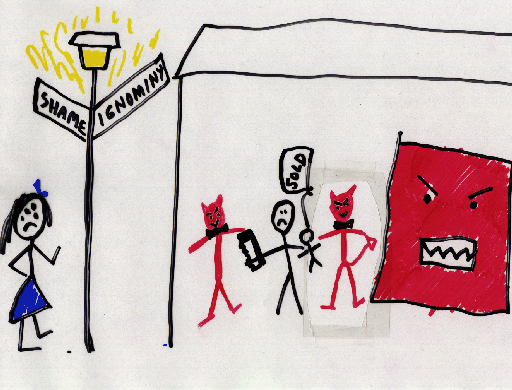

An illustrated overview of the benefits of workstations over MPPs
These slides were taken from a debate on the merits
of distributed workstations over MPPs.

Massively-parallel processors (MPPs) are so costly that they drive
parents to selling their children and honest women to prostitution.
MPPs literally cost an arm and a leg.
Fortunately, distributed workstations can save the day, vanquishing the evil MPPs.

The result is a harmonious computing environment, where even the MPP has a use.
These slides were drawn by Andrea Spertus and designed with Dawson Engler.